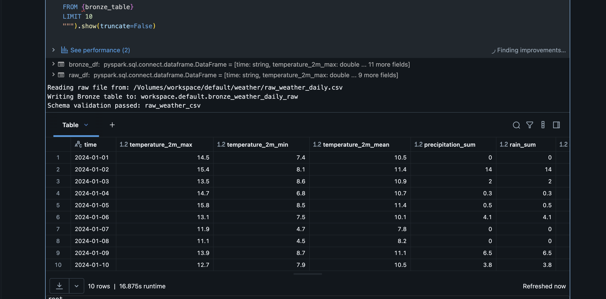
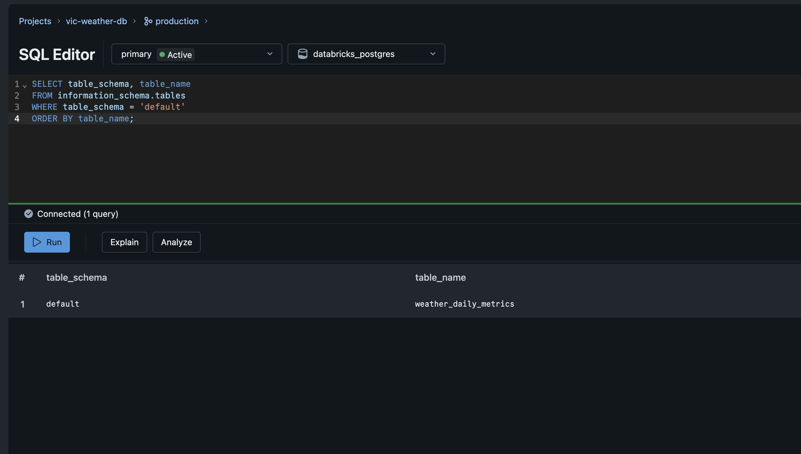

End-to-End Data Engineering Course
Weather Lakehouse
Serving System
从 Open-Meteo 原始数据，到 Databricks Gold，再到 Lakebase 与 Node.js REST API。
3 lessons · 6 hours · 1 production-shaped data path
The Question
一条天气 API 响应，背后经过了什么？
Course Map
三节课只讲一条完整主线
Raw → Bronze → Silver
- 抓取与上传数据
- Medallion 分层
- PySpark transform
Gold → Data Quality
- 表粒度设计
- 聚合与风险规则
- 10 项质量门槛
Serving → REST API
- Lakebase synced table
- Express + PostgreSQL
- Swagger 与测试
核心能力：分层、转换、建模、质量、Serving、API。
Dataset
小数据集也能覆盖完整工程链路
输入
Open-Meteo historical API，包含温度、降雨、降雪、风速、城市与坐标。
为什么足够
行数不大，学生可以快速重跑；字段足够丰富，可以演示清洗、聚合和风险事件。
Architecture
每一层只承担一种职责
BRONZE
保留事实
尽量贴近源数据，便于回放与审计。
SILVER
统一语义
标准字段、日期维度和业务 flags。
GOLD
回答问题
按消费场景重建粒度与指标。
SERVING
低延迟交付
为 API 提供稳定、简单的查询模型。
Lesson One
把原始天气数据变成可信明细
Raw → Volume → Bronze → Silver
Raw & Volume
先固定输入，再讨论转换
# local python3 data/fetch_open_meteo_weather.py # Databricks Volume /Volumes/workspace/default/weather/ raw_weather_daily.csv
三段式命名
workspacedefaultweatherBronze
Bronze 保留源字段，只补充摄取上下文
bronze_df = ( raw_df .withColumn("source", lit("open-meteo")) .withColumn( "ingestion_timestamp", current_timestamp() ) )
不重命名、不聚合、不加入业务规则。

Silver
Silver 把技术字段翻译成业务语义
过滤
丢弃关键字段为空的记录。
解析
time → weather_date
重命名
统一为清晰的业务字段。
派生
rainy / hot / freezing flags。
silver_df = ( bronze_df .filter(col("time").isNotNull()) .withColumn("weather_date", to_date("time")) .withColumn("year", year("weather_date")) .withColumn( "is_rainy_day", col("precipitation_sum") > 0 ) )
Lesson One Checkpoint
第一节课结束时，学生应该能证明这四件事
KEY IDEA
Bronze 解释“数据从哪里来”
Silver 解释“字段现在是什么意思”
Lesson Two
让数据模型直接回答业务问题
Silver → Gold → Data Quality
Grain
Gold 设计从“每一行代表什么”开始
DAILY METRICS
city + weather_date
每日趋势与 API 主表。
MONTHLY SUMMARY
city + year + month
月度聚合与趋势比较。
RISK EVENTS
city + date + risk_type
一个日期可以出现多个事件。
Gold Daily
Daily 表把明细转成可消费的每日指标
severity = ( when(col("is_rainy_day"), 1).otherwise(0) + when(col("is_hot_day"), 1).otherwise(0) + when(col("is_freezing_day"), 1).otherwise(0) + when(col("max_wind_speed_kmh") > 40, 1) .otherwise(0) )
weather_severity_score
这是业务规则，不是原始字段。规则改变时，应重算 Gold，而不需要重新抓取 Raw。
Gold Models
聚合表与事件表解决不同问题
Monthly summary
使用 groupBy + agg，牺牲明细换取更直接的年度与月度分析。
.groupBy("city", "year", "month") .agg( avg("mean_temp_c"), sum("precipitation_mm"), sum(when("is_rainy_day", 1)) )
Risk events
每类规则先生成同构 DataFrame，再用 unionByName 合并。
Schema Contract
字段契约集中定义，notebook 只负责实现
LAYER_SCHEMAS = {
"raw_weather_csv": RAW_SCHEMA,
"bronze_weather_daily_raw": BRONZE_SCHEMA,
"silver_weather_daily_clean": SILVER_SCHEMA,
"gold_city_daily_weather_metrics": GOLD_DAILY,
"gold_city_monthly_weather_summary": GOLD_MONTHLY,
"gold_weather_risk_days": GOLD_RISK,
}
Data Quality
质量检查是发布门槛，不是课后报告
Workflow & Rerun
Workflow 负责编排，notebook 负责转换
质量门
DQ 输出 task value；condition 只有在 dq_passed=true 时进入 Sync。
可重复运行
Bronze、Silver、Gold 使用 overwrite；输入不变时，Gold 业务结果保持一致。
Lesson Three
把分析结果交付成在线服务
Gold → Lakebase → Node.js REST API
Serving Layer
API 不应该把每次请求交给 Spark
Delta / Spark
批处理、历史分析、事实来源。
Lakebase / Postgres
稳定连接、低延迟查询、API serving。

课程环境受 active sync pipeline 配额限制，只启用 daily serving table；monthly 与 risk 保留为扩展配置。
Node.js Backend
后端只做四件关键的事
CONFIG
读取连接配置
URL、endpoint、profile。
AUTH
获取数据库 token
CLI 自动刷新或短期 OAuth token。
QUERY
参数化 SQL
避免拼接用户输入。
HTTP
稳定 JSON contract
校验、状态码与错误处理。
REST API
Endpoint 围绕用户问题，而不是数据库表名
WHERE city = $1 AND weather_date BETWEEN $2::date AND $3::date ORDER BY weather_date -- values are passed separately [city, from, to]
OpenAPI & Swagger
API contract 可以被人阅读，也可以被工具执行
Weather Serving API
OpenAPI 3.0.3
Parameters city · from · to
Responses 200 · 400 · 500
/api-docs
浏览参数、schema，并直接执行请求。
/openapi.json
机器可读 contract，可用于生成 client 或测试。
7 tests passed：route、validation、OpenAPI、Swagger、config 与 auth。
End-to-End Demo
最终演示应按数据流顺序完成
1 — BUILD
展示分层结果
Bronze、Silver、三张 Gold。
2 — VERIFY
通过质量门槛
10/10 passed
3 — SYNC
查询 serving table
确认 Postgres 中存在 daily 数据。
4 — START
启动 Node.js
npm start
5 — CALL
请求真实 API
health、cities、daily。
6 — INSPECT
打开 Swagger
验证 contract 与 response。
Course Synthesis
一个完整数据产品，需要每一层都能解释自己的责任
正确的数据
schema contract、粒度、业务规则与质量门槛。
正确的边界
Delta 负责分析事实，Lakebase 负责在线查询。
正确的交付
参数化 SQL、稳定 JSON、OpenAPI 与自动测试。
Next: monthly/risk endpoints · React dashboard · continuous sync · scheduled jobs